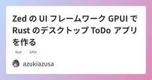

直近1週間の人気フィード
はてなブックマーク数を元に新着優先で並べ替え
wfx-loot campaign pushes CI secret stealer to tens of thousands of repositories 16 Aikido Security's Blog
16 Aikido Security's Blog
A wave of compromised accounts are pushing a CI secret stealer. See if you’re affected, what it steals, and what to rotate.Category: Vulnerabilities & Threats
3日前

Zed の UI フレームワーク GPUI で Rust のデスクトップ ToDo アプリを作る 61 azukiazusa のテックブログ2
azukiazusa のテックブログ2
Electron 製のデスクトップアプリはブラウザエンジンを同梱するため、メモリ使用量や描画性能に課題があります。GPUI は Zed のために開発された、GPU で描画する Rust の UI フレームワークで、Discord も採用を表明しています。この記事では GPUI Kit と組み合わせて ToDo アプリを作りながら、Entity による状態管理、cx.notify() による再描画、Action とキーバインドの使い方を解説します。
6日前


Hide your slop PR descriptions behind <details><summary> 34Simon Willison's Weblog
<p>Most of the changes I make to my projects these days come in the form of PRs opened for me by Claude Code or Codex. The PR is my unit of work - I use them to bundle commits together, iterating on them until a feature is complete, document decisions and then merge the finished result. Today's coding agents are great at writing PR descriptions.</p><h4 id="they-re-too-good-at-describing-the-work">They're too good at describing the work</h4><p>The problem is that th...
5日前